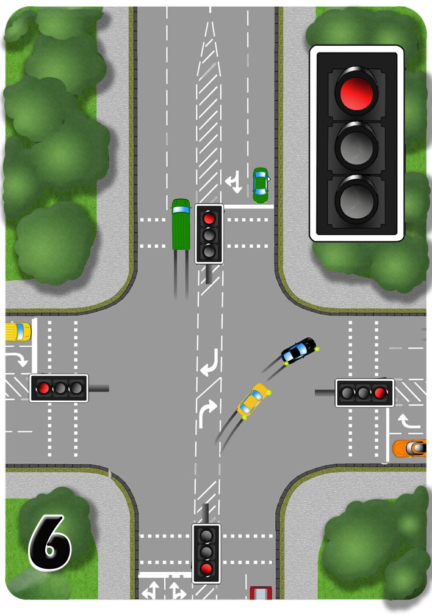
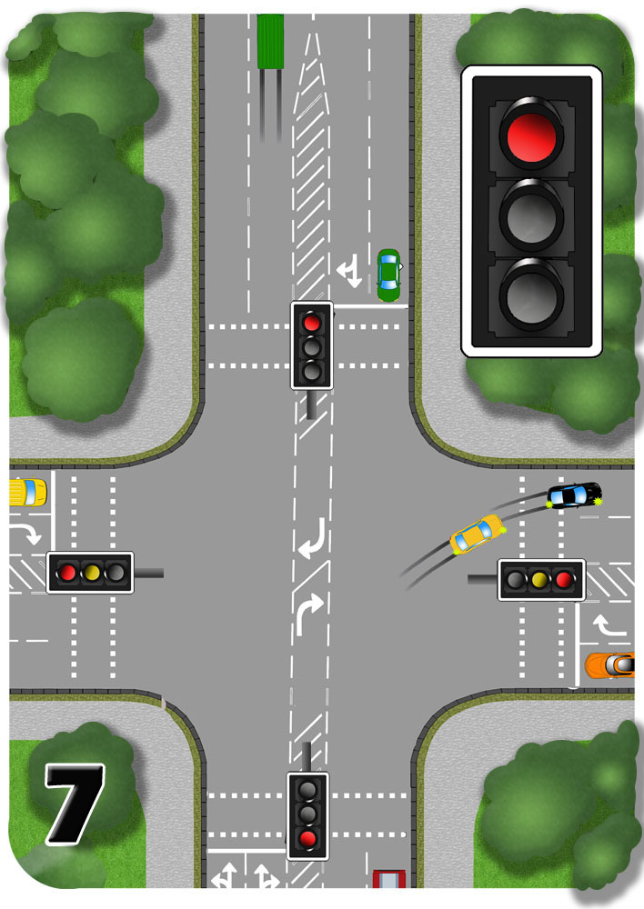

5.The learner car and the purple car clear the junction into the left lane of the new road.
The black car and the yellow car pause on the crossing as they gauge whether the oncoming green car will stop at the amber light.

6.The black car and the yellow car proceed off of the junction as soon as they’re sure that the green car is stopping.
It is important to clear the junction promptly so that it’s clear for the crossing traffic as their lights change.

7.If you’re delayed then be careful, especially looking out for pedestrians who might be using their crossing.